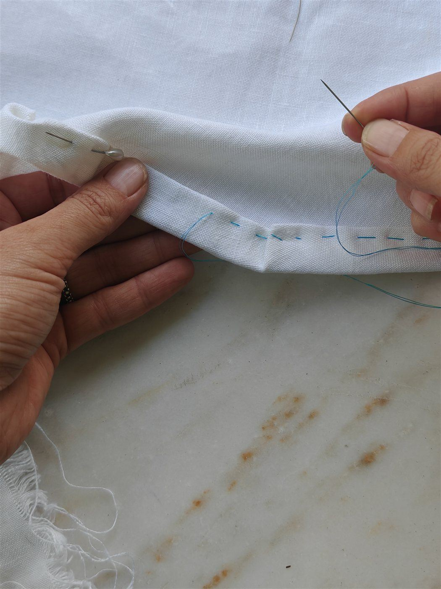
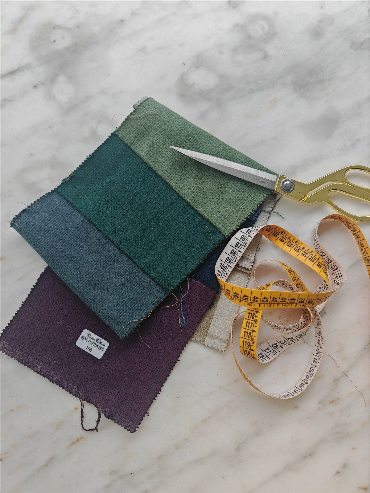
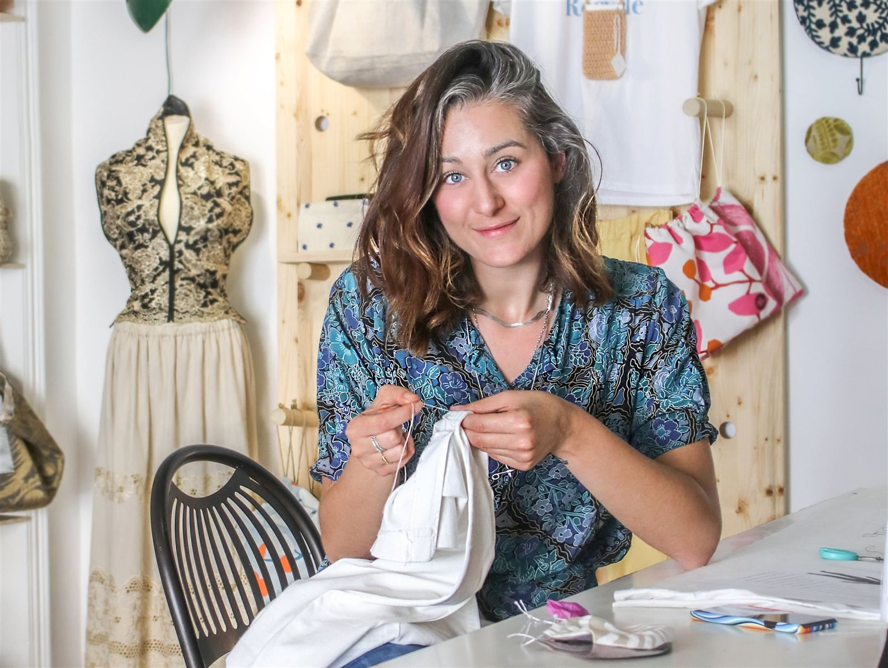

Laboratori di cucito e riciclo tessile per scuole ed enti
Da più di dieci anni porto il cucito, la riparazione e il riciclo dei vestiti in scuole, associazioni e centri del terzo settore. Si impara con le mani, si finisce un oggetto vero, si torna a casa con un modo nuovo di guardare i vestiti.
- Per chiscuole, enti, associazioni, terzo settore
- Formatoda un workshop di 2 ore a percorsi di più mesi
- Materialicompresi, li porto io

I temi dei laboratori
Ogni laboratorio parte da quello che c'è già: vestiti usati, ritagli, campionari di tappezzeria. Scegliamo insieme il tema in base all'età e al tempo che avete.
Cucito a mano, dalle basi
Ago, filo, i punti che servono davvero. Si cuce un primo oggetto finito: una pochette, un sacchetto, un porta spilli.
Riparare i vestiti
Bottoni, orli, cuciture aperte, strappi e buchi. Anche il rammendo visibile, che ripara e decora.
Riciclo e upcycling
Una maglietta che diventa una shopper, un jeans che diventa una borsa, una tenda che diventa un'altra cosa.
Patchwork
Unire tanti tessuti diversi in un disegno solo: un cuore, una lettera, un piccolo quilt.
Uncinetto con il tessuto
Vecchi vestiti tagliati a strisce e lavorati come un filo, per fare ceste e borse.
Moda e sostenibilità
Da dove vengono i nostri vestiti, quanti ne buttiamo, cosa possiamo fare. Una parte di racconto, una parte di mani.
Dalla prima telefonata all'ultimo punto
- Mi scrivete chi siete, quante persone, che età e quanto tempo avete.
- Vi mando una proposta con il tema, il numero di incontri, le ore e il preventivo.
- Porto io tessuti, aghi, fili e attrezzi: a voi serve solo uno spazio con dei tavoli.
- Alla fine ognuno porta a casa quello che ha cucito.

Quanto dura un laboratorio
Workshop
Due ore, un oggetto finito. Va bene per una giornata a tema, una festa di quartiere, un evento.
Percorso breve
Quattro-otto incontri, per imparare le basi e arrivare a riparare o trasformare un capo.
Percorso lungo
Più mesi, anche cento ore, per progetti con un gruppo fisso: si arriva a cucire capi interi.

Sono Greta Naselli
Sono artista del tessile e insegnante di sartoria zero waste. Ho fondato Repunto, il mio laboratorio di sartoria rigenerativa, oggi in campagna vicino a Regalbuto, in provincia di Enna.
Lavoro con i campionari di tappezzeria che le aziende dismettono a fine collezione e con i vestiti che le persone non usano più. Nei laboratori insegno quello che faccio ogni giorno.
Leggi il manifesto di Repunto →Prima di scrivermi
Quanto costa un laboratorio?
Dipende da quante persone siete, quante ore e quanti incontri. Vi mando un preventivo su misura, con i materiali già compresi.
Serve una macchina da cucire?
No. Molti laboratori si fanno solo a mano, con ago e filo. Se servono macchine da cucire ne parliamo nella proposta.
Per che età sono i laboratori?
Per ragazzi e adulti. Il tema e il ritmo cambiano in base all'età e a quello che il gruppo sa già fare.
Quante persone possono partecipare?
Per seguire bene ognuno, i gruppi sono fino a dieci persone. Con gruppi più grandi si fanno più turni.
Dove si fanno?
Nella vostra sede. Lavoro in Sicilia; per altre regioni scrivetemi e vediamo insieme.
Potete inserirlo in un progetto finanziato o in un bando?
Sì. Vi preparo la proposta con temi, ore, materiali e risultati, da allegare al vostro progetto.